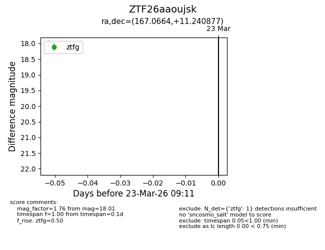
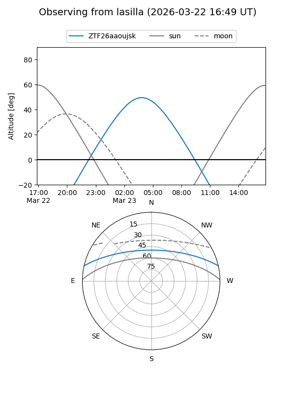
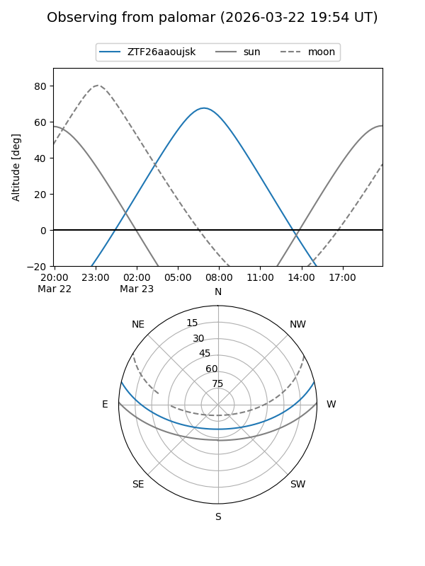

ZTF26aaoujsk
Target ZTF26aaoujsk at 2026-03-23 09:13
Aliases and brokers:
FINK: link
Lasair: link
ALeRCE: link
alt names
ZTF26aaoujsk (ztf,fink_ztf)
Coordinates:
equatorial (ra, dec) = 167.0664,+11.24088
equatorial (HMS+DMS) = 11:08:15.94,+11:14:27.16
galactic (l, b) = (241.1689,+61.02539)
Flags:
Photometry:
last ztfg=18.01
1 ztfg detections
Lightcurve

Visibility


Additional plots